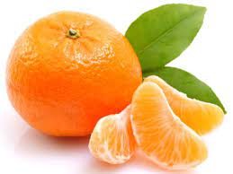

tentangbuah.com

Jeruk

Jeruk adalah buah dari berbagai spesies citrus dalam famili Rutaceae terutama mengacu pada Citrus × sinensis ,yang juga disebut jeruk manis, untuk membedakannya dari Citrus × aurantium terkait, yang disebut
jeruk pahit.
Jeruk manis bereproduksi secara aseksual (apomiksis melalui nucellar embryony); varietas jeruk manis muncul melalui mutasi.
Khasiat Jeruk
- Meningkatkan fungsi otak
- Menjaga kesehatan ibu hamil dan janinnya
- Membantu menjaga tekanan darah
- Memelihara kesehatan rambut dan kulit
- Manfaat buah jeruk untuk pencernaan
- Mengurangi risiko diabetes
- Mencegah anemia
Daftar Harga
| Jenis Jeruk | Harga | |
|---|---|---|
| Per Kilo | Per Biji | |
| jeruk manis | 50.000 | 5000 |
| Jeruk Nipis | 60.000 | 6000 |
| Jeruk Purut | 70.000 | 7000 |
| Jeruk Bali | 55.000 | 5500 |